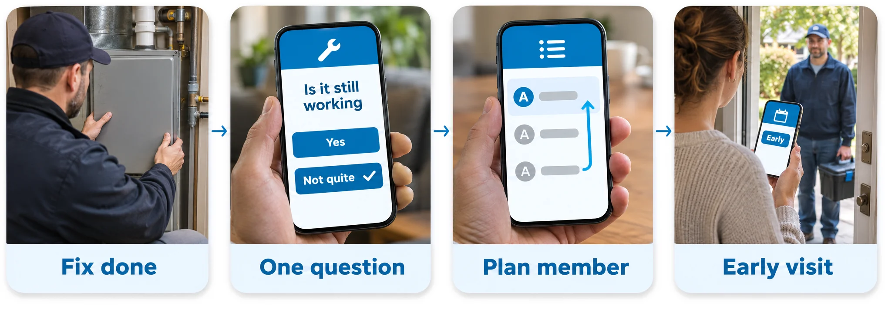
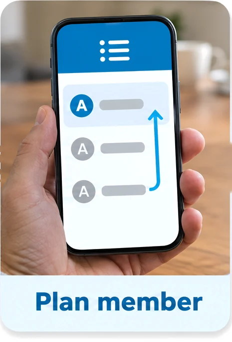

Come Back Checks






- Problem
- My customers pay for a plan, then wait anyway, and I only hear from them when something breaks.
- Who has it
- HVAC, plumbing and roofing providers with repeat customers.
- What people say
- “when his AC also went out in July, it still took them a week to come out.” Customer on Reddit, r/StCharlesMO, 2026-10-13
 Open the post
Open the post